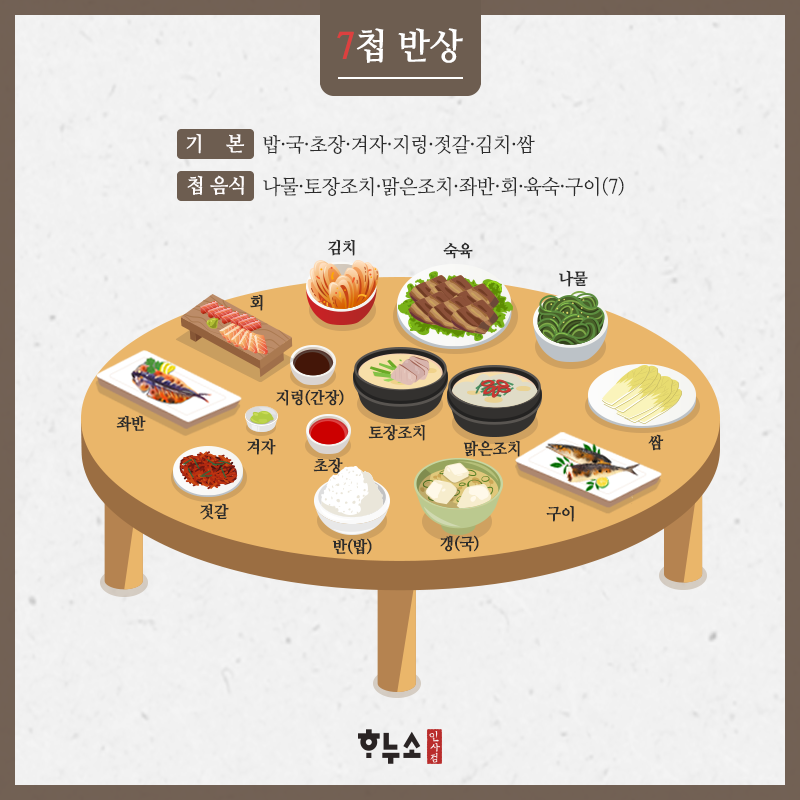

7첩 반상
댓글
회???
와씨.....
지렁지렁
젠슨기사식당
저딴 병신같은 글이 무슨 회 이지랄 ㅋㅋ
와... 좌반고등어..
우반고등어 어디갔노
ㄹㅇㅋㅋ
뭔 밈이야
젠슨황 불륜녀7명
겨 자지 렁
ㄹㅇ 부르주아 식단같네
7첩이라니 야하네...
황가 반상 ㄷ ㄷ
육첩방은 남의 나라(진짜 남의 나라임)
회랑 수육이면 ㄹㅇ 풀코스네
육숙이고 숙육이야? 뭔데 ㅋㅋ
퀄리티가 떨어지는 건지 좆병신 스캠글인지
와 지렁이 간장의 방언이라네? 오늘 처음 알았다. 조치라는 말도 찌개의 겸양어같은거구나.
=========
우리 말 중에 ‘간장’을 ‘지렁’이라고도 한다. 이 ‘지렁’은 서울(지럼)·강원도(지렁)·경기도(지령) 지역의 방언에서 그 흔적을 찾아볼 수가 있다. 공주·논산을 비롯한 충남에서는 ‘지랑’이란 방언을 쓴다.
방언연구가 김성재는 지렁을 ‘우러나서 검붉게 된 물’이라고 한다.
충청 지역의 ‘지랑(지렁)’이란 말은 외양간에서 나오는 ‘소지랑물’, 초가지붕에서 눈석임물이 녹아 흐를 때 검붉게 흘러내리는 ‘집지랑물(지지랑물)’, 또 퇴비가 썩으면 검붉게 흘러내리는 ‘거름지랑물’과 어원적으로 맞닿아 있다고 한다. 이 주장이 틀린 것은 아닐 것이다.
한편 고문헌에서는 1670년(현종 11년)경 조선 후기에, 장계향(張桂香, 1598~1680)이 쓴 조리서로 궁체로 쓰인 필사본 <음식디미방(飮食知味方)>의 ‘지령’과 1809년(순조 9년) 빙허각(憑虛閣) 이씨(李氏)가 엮은 생활 경제 백과사전인 <규합총서(閨閤叢書)>에 ‘지렁’이 보이고 1919년에 심환진(沈晥鎭)이 상주군수로 부임하여 그곳의 반가에 소장되어 있던 조리책 하나를 빌려서 괘지에 필사한 <시의전서(是議全書)>에 ‘속대짬지’를 소개하면서 “좋은 배추속대 썰지 말고 지렁에 절여 고추 파 생강 마늘 다 채치고 깨소금 기름 넣어 무쳐 쓰라”고 하면서 ‘지렁’이 나온다. 이는 ‘짜다’는 뜻의 우리 옛말인 ‘자, 잗, 잘, 질’에서 유래된 것으로 보인다.
==========
조치助致는 찌개, 지짐이, 감정이라고도 한다. 국물의 간을 맞춘 재료에 따라 토장(된장)조치와 고추장조치라 하고, 젓국으로 끓인 조치는 젓국조치라 한다. 또, 간장이나 젓국으로 간을 맞춘 것을 맑은 조치, 청국장으로 간을 맞추면 청국장조치라 한다. 맑은 조치나 젓국조치에 쓰이는 재료는 두부, 호박, 무, 명란젓, 생선, 쇠고기, 조개 등이다. 토장조치에는 호박, 두부, 풋고추, 쇠고기, 생선, 조개류 등이 이 용된다. 궁중이나 상류층의 조치는 맑은조치이고, 서민의 조치는 토장조치이다. 그 밖에 진지 재료에 따라 호박조치, 버섯조치, 두부조치, 순두부조치, 달걀조치, 콩비지조치 등이 있다. 조치는 온갖 재료를 넣고 끓이는 아주 간단한 음식이지만 맛있게 끓이기는 생각처럼 쉽지 않다. 특히 토장조치(된장찌개)는 토장(된장)맛과 불 조절로 맛의 차이가 나서 사람마다 솜씨가 다르다.
조치는 1797년(정조 21) 윤 2월 9일부터 16일까지 경기도 화성華城에서 베풀어진 정조의 자궁이신 혜경궁惠慶宮 홍씨洪氏의 회갑연을 기록한 『원행을묘정리의궤園幸乙卯整理儀軌』에 처음 나온다. 여기에 볶기, 초, 탕, 찜, 만두, 포를 모두 조치라 했다. 볶기는 골볶기, 황육볶기, 생치볶기, 양볶기, 콩팥볶기, 죽합볶기, 진계볶기, 처녑볶기, 반건대구볶기 등이다. 초는 전복초, 저포초, 낙지초, 생복초, 죽합초, 황육초, 생합초 등이다. 탕은 골탕, 게탕, 생복 만두탕, 수잔지水盞脂곰 등이다. 찜은 숭어찜, 양숙, 생복찜, 곤자소니찜, 잡장전, 붕어잡장, 봉총찜, 건숭어찜, 수어장자, 숭어잡장, 숭어찜, 저포찜과 그 밖에 생치편포·양만두 등도 조치에 포함시켰다. 조리서에는 『시의전서是議全書』에 처음 나온다.
============
자반은 한자로는 좌반佐飯, 佐盤이라 쓴다. 즉 밥 옆에 따른다. 식사를 돕는다는 의미로 밥과 함께 놓는 반찬을 의미한다. 또한 자반은 한 가지 특정한 조리법을 가리키는 것이 아니라 밥의 찬이 되는 밑반찬, 마른반찬, 부각, 튀각, 절인 생선 등을 두루 이른다. 『원행을묘정리의궤園幸乙卯整理儀軌』(1795) 수라상 찬품饌品에 좌반佐飯을 살펴보면 염민어·염송어와 같은 소금에 절인 생선, 쇠고기·꿩 등을 말린 포脯, 대구다식·전복다식이나 우설다식·황육다식·육병·육장·장볶이 등도 자반에 포함시키고 있다. 또한 『시의전서是議全書』(1800년대)의 자반 담는 법을 보면 “민어를 광어 포 적시듯이 하여 껍질을 벗겨 포같이 잘라 담고, 어란 같은 것은 위에 얹는다. 자반이 없으면 튀각으로 대신한다.”고 하여 어포나 어란 등도 자반인 것을 알 수 있다.
조치란 말은 처음 들었는데 옛날식 찌개구나
좌반이 자반이구만
젠슨 밥상 ㄷㄷ